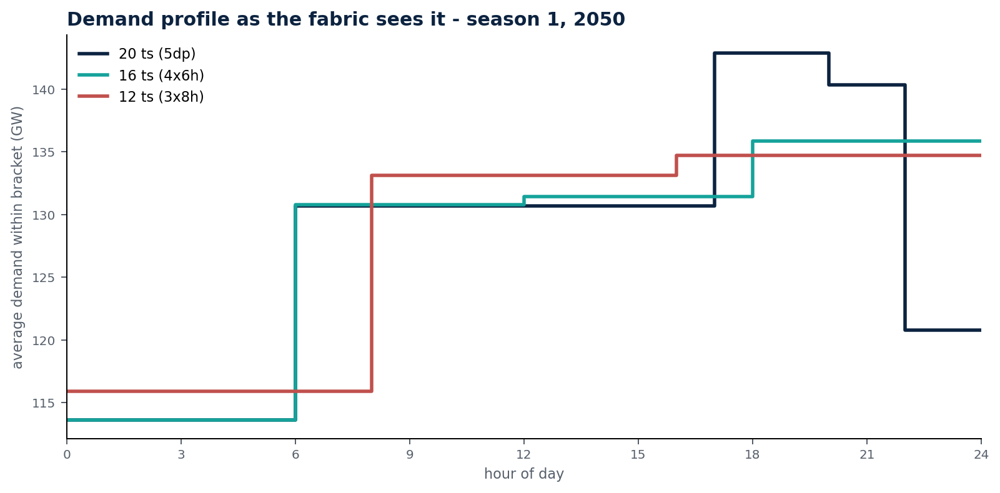
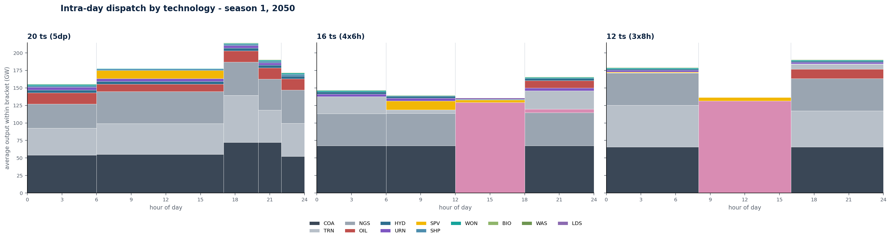

20 vs 16 vs 12 timeslices — scenario: B_Optimised_VRE, reduced training model (BGDXX + INDEA)
Three solves of the same scenario on the same hourly source year. Only the timeslice workbook was swapped — no code, no assumption and no input series changed. The four monsoon seasons are identical in all three; only the day is re-cut.

The legend above applies to every bar on this page.

Each panel is scaled to its own maximum, because the storage figures are an order of magnitude above the others. Read the printed values, not the bar lengths, when comparing across panels.
| Metric | 20 ts (5dp) | 16 ts (4×6 h) | 12 ts (3×8 h) |
|---|---|---|---|
| System cost (MUSD) | 581,508 | 511,973 | 463,087 |
| Coal, new capacity (GW) | 56.49 | 51.62 | 49.76 |
| Hydro, new capacity (GW) | 20.60 | 14.98 | 4.86 |
| Small hydro, new capacity (GW) | 14.72 | 1.56 | none |
| Short-duration storage (SDS) | 38.61 | 240.79 | 255.42 |
| Oil, new capacity (GW) | 19.22 | 20.53 | 13.13 |
| Nuclear, new capacity (GW) | 4.08 | 3.88 | 2.40 |
| Transmission (TRN) | 142.89 | 142.67 | 121.07 |
| Evening peak seen (GW) | 143 | ~136 | ~135 |
| Solve time (s) | ~31 | ~8 | ~5 |
Cost and capacity read from summary.csv in this folder. For the
12-timeslice run the small-hydro cell is empty in that file, meaning no small hydro was
built; it is shown here as none rather than as a zero measurement.
Cost falls by a fifth from 20 to 12 timeslices because fewer brackets mean fewer constraints. The model solves an easier problem, not a cheaper system. Hydro gives way to storage that mostly papers over the averaging error, and a wide block credits solar to every hour it contains, including dark ones — the 8-hour fabric puts 6.75% of solar energy into hours with no sun, sixteen times the adopted fabric. Coarse fabrics do not dim the solar day; they invent solar at night. That is why the 5-daypart, 20-timeslice fabric was adopted: it keeps the evening peak, the solar day and the night as separate decisions the model must pay for.
The fabric is read from the timeslice workbook itself, so a variant swaps in as one file. No code changes.
Step 0 — Prepare the profile once (the profile ships inputs, not a built model):
python -m ostram example prepare unescap
Back up the fabric authority first. The next step overwrites the profile's committed timeslice workbook. Keep a copy before you start, or be ready to restore it from version control.
Step 1 — Copy a variant workbook over the fabric authority:
timeslice_module/outputs/OSTRAM_Timeslice_Outputs_3dp12ts.xlsx → examples/unescap/inputs/scenarios/OSTRAM_Timeslice_Inputs.xlsx
The module ships four pre-computed cases in timeslice_module/outputs/:
REFERENCE_5dp20ts (the adopted fabric), 4dp16ts (6-hour blocks),
3dp12ts (8-hour blocks) and 6dp24ts.
Step 2 — Run the scenario:
python -m ostram --profile unescap run --scenarios B_Optimised_VRE
Step 3 — Record a labelled snapshot before you touch the next fabric. Every run replaces the combined results, so without a capture the previous fabric's numbers are gone:
python -m ostram example report unescap --capture ts-20
Then repeat steps 1–3 once per fabric, capturing under ts-16 and
ts-12. With the three snapshots on disk the report route can put any two of
them side by side.
Step 4 — Restore the adopted 20-timeslice workbook when you are done, so the profile stays canonical.
YearSplit is the fabric: one row per timeslice with its season, its
daypart and its share of the year. It goes from 20 rows to 16 or 12.Config is load-bearing. The pipeline parses the hour ranges out of the
daypart labels — the (00-08) parentheses are not decoration —
and stops the run if the hours do not sum to 24._Dem sheets carry demand_fraction, which must sum to
one. A fraction above that slice's yearsplit marks a peaky slice; in the
coarse fabrics that signal is averaged away._CF sheets show the phantom solar directly: solar earns a non-zero
capacity factor in the night block, because the block contains sunrise.CF_Provenance audit sheet recording, per technology,
which zone sheet, tech type and column supplied every number.The variant workbooks carry 23 sheets — one _Dem and one
_CF pair for each of the ten zones of the full model — while this
reduced profile's own workbook carries six. That is not an error: a reduced profile loads
only the sheets for the zones in its configuration and ignores the rest.